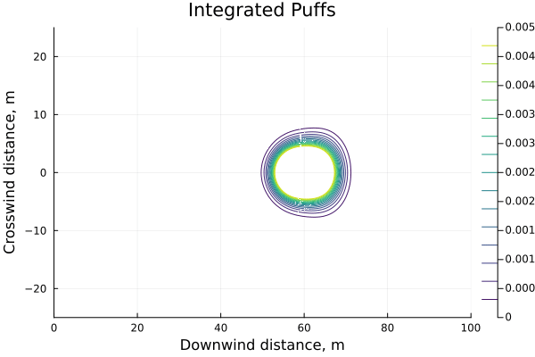

Considering the Gaussian dispersion of an isothermal blowdown case.
An integral plume model for buoyant plumes.
Having fun with data logging.
Calculating how far the wind blows.
Modelling vessel blowdowns using equations of state.
Evaluating approaches to ideal gas blowdowns.
Compressible orifice flow calculations using equations of state.
Hydrogen plume modelling and indoor accumulation.
Is plastic recycling a huge source of microplastics?
Modelling espresso bed extraction.
Evaluating the zero emissions fuel.
Looking for impossible bowling games.
The importance of choosing the right references.
Better coffee through chemical engineering.
Better indoor air quality through data.
Re-evaluating plume extents and determining the explosive mass
Successive approximations to … an integrated gaussian puff model.
Dynamic mode decomposition of fluid flow problems.
Blending hydrogen into natural gas.
Evaluating different models of adiabatic pipe flow.

An integrated Gaussian puff model
Calculating concentrations, temperatures, and flow rates.
Notes on turbulent jets and velocity profiles.
An analysis of how exceptionally little changed.
Frequency of forest fire smoke events.
Single zone building infiltration model with an instantaneous release
Single zone building infiltration of forest fire smoke.
Estimating the explosive mass.
Using the Baker-Strehlow-Tang model for a vapour cloud explosion.
The worst case weather conditions for air dispersion modeling.
Estimating the airborne quantity.
Calculating the minimum diameter in incompressible, isothermal, and adiabatic flow situations.